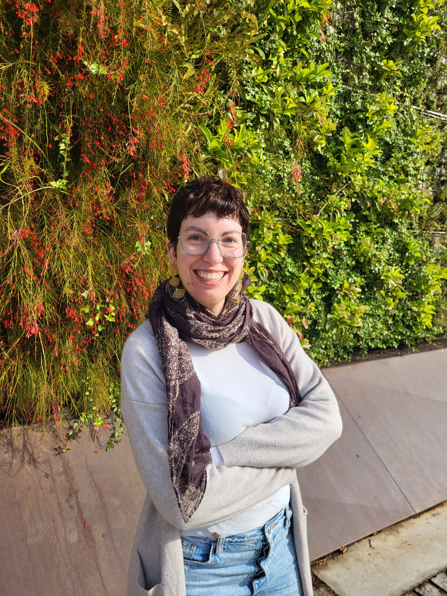

If I had to describe myself in one word, it would be curious.
Since I was little, I've wanted to understand how things work:
I mixed ingredients in my grandma's kitchen just to see what happened,
and I spent afternoons peering at water with a magnifying glass,
convinced I would find invisible organisms swimming around.
That same curiosity guided me through school.
Some people would have called me a nerd, and honestly, they wouldn't be wrong 🤓.
I've always been good at passing exams, even though studying itself wasn't my favorite activity.
I preferred practical subjects, hands-on learning, and anything that felt like solving a puzzle.
Science, especially math and physics, came naturally to me… though I also loved art class.
When it came time to choose a university degree, I felt completely lost.
It's funny how at 17 or 18 we're expected to make decisions that supposedly define our future.
I originally thought about studying mathematics, but I had the (very wrong!) idea that this
would only lead to teaching, which wasn't for me at that point.
So I chose Biochemistry… or at least that was the plan until I missed the admission cutoff by 0.008 points 🫠.
So I enrolled in Biology.
The first year was rough.
I hadn't gotten into the degree I wanted, I had afternoon classes,
I was leaving behind an environment where I had felt comfortable,
and, most importantly, I was facing a lot of change all at once.
Some people thrive socially at university; I wasn't one of them.
I felt like I was doing “3rd year of high school” all over again, not living some great new chapter.
I considered switching degrees, like a double major in maths and computer science.
But changing my whole life again, felt overwhelming.
I told myself: “If I fail something, I'll switch.”
But being who I am… I didn't fail.
So I kept going.
Things got better. In second year, I finally took Biochemistry, and funnily enough,
I didn't enjoy it at all.
That helped me feel much better about not having entered the degree in the first place.
Then came Bioinformatics, and everything clicked.
But even then, the path wasn't always smooth. I had professors tell my class:
“I know biologists don't like numbers…”
or
“You've arrived late to bioinformatics.”
Comments like these can discourage people.
But I knew what I liked: numbers, logic, problem-solving...
so instead of letting those words limit me, they motivated me.
By the end of my Bachelor's, I was torn between Genetics and Bioinformatics.
I chose Genetics for my first Master's, and I learned a lot, especially while working in a lab with CRISPR.
I'd dreamed of doing a PhD since I was eight years old.
But dreams sometimes evolve.
I didn't get the PhD position in that lab, and honestly,
at the time I interpreted it as a sign that maybe I wasn't meant for that path.
Looking back, I see it simply wasn't the right moment or the right project for me.
Finally, I decided to follow the path I had been circling for years and enrolled in a Bioinformatics Master's.
I loved it ❤️. The mix of biology and programming felt perfect.
The workload, the teamwork, and the “we're all in this together” feeling created bonds I still treasure.
During my Master's thesis, I worked in a synthetic biology lab where CRISPR became a constant in my daily life.
I ended up staying in that lab as a bioinformatics scientist,
which allowed me to work across many different projects and collaborate closely with wet-lab scientists.
One of the tools I contributed to, called INSERT-seq, began as a pipeline to detect chromosome rearrangements,
and we later adapted it to detect viral insertions relevant to a type of muscular dystrophy.
It eventually became part of the technology used by the lab's spin-off company.
It was an intense environment. Synthetic biology moves fast, and expectations are high,
but I learned a lot.
Over time, I realized something:
The moments when time flew were always the ones where I was programming.
I loved building analysis pipelines, especially for cutting-edge experimental designs that didn't
yet have standard tools. That creativity and problem-solving mindset was where I felt most alive.
So I started quietly searching for more programming-focused roles.
I only applied twice in two years. I wanted the “right” position.
The first one involved a live programming exam over Zoom, my first ever technical interview.
I was inexperienced, nervous, and… let's just say it didn't go well. I wasn't selected.
Months later, a second opportunity appeared: a position with nf-core,
an international open-source bioinformatics community built around the Nextflow ecosystem.
I had contributed before, loved the environment, and felt aligned with their mission.
The role was only for one year and based in Germany.
I had never lived abroad, but strangely, this time it felt right.
And a few days after the interview, I got the email:
“You've been selected.”
I was moving to Germany.
⏩ Almost 4 years after switching to a more technical role, I can say I've grown enormously:
technically, professionally, and personally.
Working in open source has shown me the value of collaboration, transparency, and community-driven science.
I've finally found a space where my love for biology and my passion for programming meet naturally.
I still care deeply about research and the biological questions behind the code,
but I also know that building tools, creating things that help others do their science,
is where I truly shine.
And if there's one thing I hope people take from my story, it's this:
👉 There is no such thing as “arriving late.”
👉 Your path doesn't need to look like anyone else's.
👉 Curiosity can take you very, very far.
